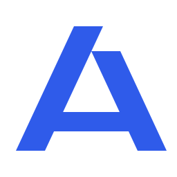

AI and CRM automation
aziel.corporation@gmail.com
github.com/mlawrencelindo
mlawrencelindo.github.io/myPortfolio
Philippines, GMT+8
I build Make, n8n, and AI automations for small businesses: lead sorting, invoice follow-ups, and reports. Every build runs on test data first, logs every failed run, and drafts before it sends.
Four n8n workflows: reminders at 3, 7, 14, and 30 days overdue, a paid listener that stops them, a Monday cash report, and an error alert with a link to the failed run.
One email per invoice per day, signature-checked webhook. 40 unit tests and 8 of 8 end-to-end cases pass. GitHub repo
A Make scenario that sorts each website lead as hot, warm, or spam with a one-line reason, logs it to a sheet, writes a Gmail draft, and books a follow-up for hot leads.
4 of 4 test leads sorted right, about 6 seconds per lead. Replies stay as drafts. A failed step logs the lead and retries 3 times, 15 minutes apart; 3 of 3 forced faults caught.
An agent that finds and vets paid video campaigns, builds and checks each clip, schedules posts with calendar reminders, and logs results. It stops for sign-ins, sends, and payouts.
Since 2026-10-15: 64 posts scheduled, 31 research files, 14 clip batches. About 10 hours a week saved (estimate).
Full write-ups, screenshots, and workflow files: mlawrencelindo.github.io/myPortfolio